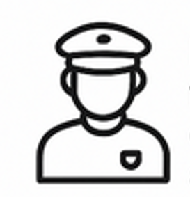
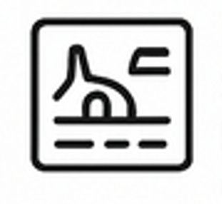
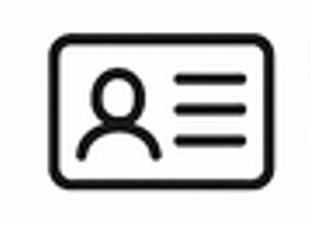
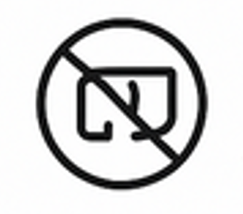

Driver's Right When Apprehended
The legal protections and entitlements that a driver has when stopped or caught by a traffic enforcer for a possible violation.
Right to be Informed of the Violation
-

Right to ask for the traffic enforcers ID and name
Before giving any document, you have the right to request the valid ID or name of the apprehending officer.
Tagalog: Bago magbigay ng anumang dokumento, may karapatan kang hilingin ang valid ID o pangalan ng nag-aapprehend na opisyal.
-
Right to know the exact violation being charged
Allows the driver to defend themselves properly if they believe they did not commit the violation.
Tagalog: Pinapayagan ang driver na ipagtanggol ang kanilang sarili nang maayos kung naniniwala silang hindi nila ginawa ang paglabag.
-
 Right to see the order of battle or mission order
Right to see the order of battle or mission orderThe enforcer must carry a mission order for that day. You may request to see it.
Tagalog: Dapat magdala ang enforcer ng mission order para sa araw na iyon. Maaari mong hilingin na makita ito.
-
Right to refuse on-the-spot payment
You are not obligated to pay immediately if there is no official receipt. All payments should be made at the office or through official payment channels only.
Tagalog: Hindi ka obligado na magbayad agad kung walang official receipt. Ang lahat ng bayad ay dapat gawin sa opisina o sa pamamagitan lamang ng mga opisyal na channel ng pagbabayad.
-
Right to request an official traffic citation ticket
If a ticket is issued, it must be official and contain a control number. You have the right to receive a copy.
Tagalog: Kung maglalabas ng ticket, dapat itong opisyal at maglaman ng control number. May karapatan kang makatanggap ng kopya.
-

Broken And Solid Yellow Lines (Mixed Center line) Markings
A marking indicating the separation of traffic lanes.
Tagalog: Isang pagmamarka na nagpapahiwatig ng paghihiwalay ng mga lane ng trapiko.
-

Right not to have your license confiscated if it is not part of the penalty
Not all violations require license confiscation.
Example: Beating the red light – the officer may issue a ticket, but they should not immediately take your license unless explicitly stated.
Tagalog: Hindi lahat ng paglabag ay nangangailangan ng pagkumpiska ng lisensya. Halimbawa: Paglampas sa pulang ilaw - maaaring mag-isyu ang opisyal ng ticket, ngunit hindi nila dapat agad kunin ang iyong lisensya maliban kung tahasang nakasaad.
-
Right to ask questions or request clarification
You may politely ask about the process and where to pay or file an appeal.
Tagalog: Maaari kang magtanong nang magalang tungkol sa proseso at kung saan magbabayad o maghain ng apela.
-
Right to record (video/photo) the encounter
As long as it is not obstructive or disrespectful, you are allowed to document the process as proof.
Tagalog: Hangga't hindi ito nakahahadlang o walang galang, pinapayagan kang idokumento ang proseso bilang patunay.
-

Right to refuse any form of bribe or illegal payment
Asking for bribes is against the law. You have the right to refuse and report it to the proper anti-corruption authorities.
Tagalog: Ang paghingi ng suhol ay labag sa batas. May karapatan kang tumanggi at iulat ito sa mga tamang awtoridad laban sa korapsyon.